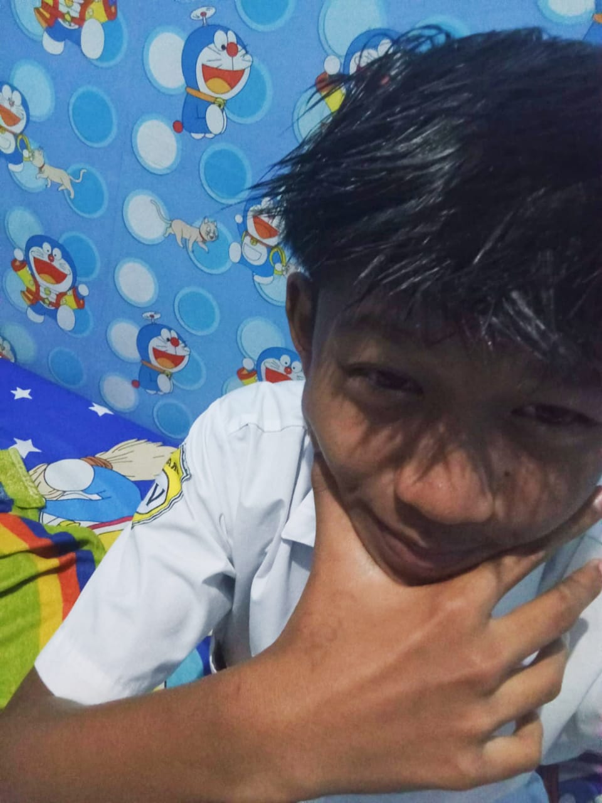
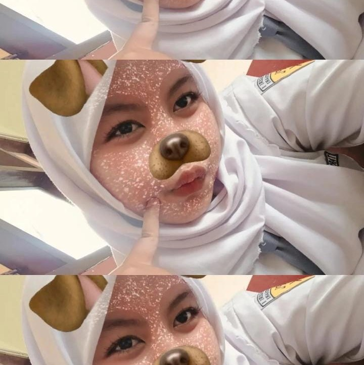
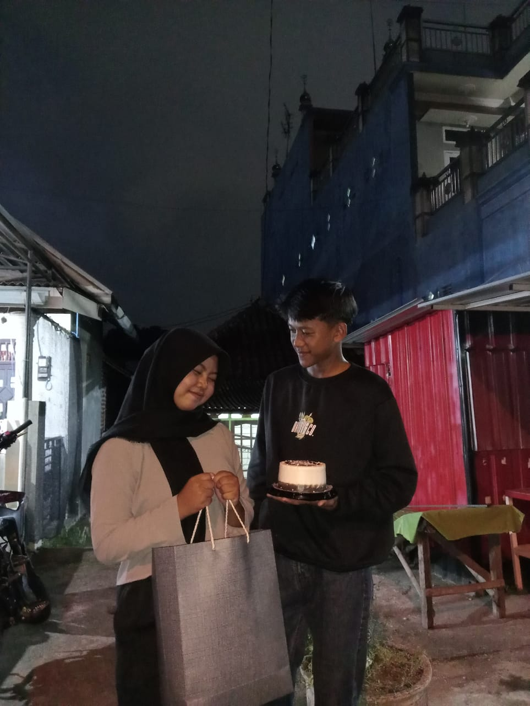
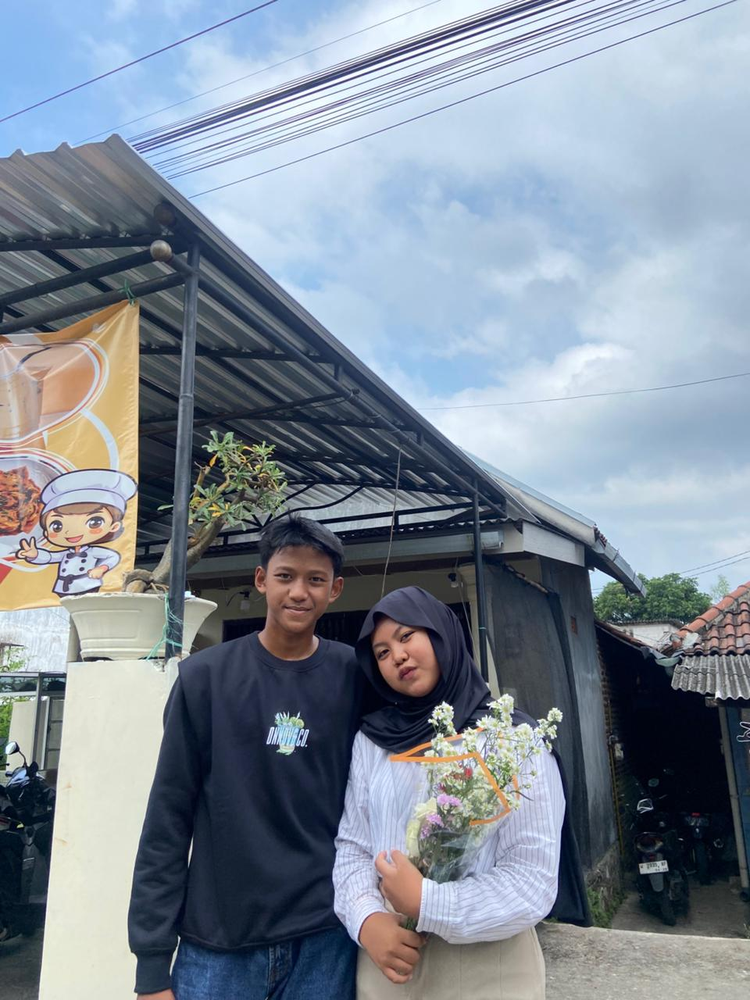

Hai kita adalah RECA. kita jadian tanggal 04-05-2025, kenapa nggak tanggal 5? gatau tanyakan ke orang yang nembak duluan 😆
aku adalah REDO dari reca
aku adalah ICA dari reca
Ini caht pertama kita, fun fact nya kita kenal gara-gara dikenalin sama temen kita yang juga pacaran, jadi temannya redo pacarnya temanku. jadi disitulah redo memulai chat pertama, kalau dipikir lucu banget membuat senyum-senyum sendiri.
Waktu itu pertemuan pertama ketika makan seblak, saat itu aku diajak sama temanku nyeblak, dan jujur aku sama sekali tidak berani melihat wajahnya karena dia sangat tampan sekalii omaigatttt.
Hari yang selalu kuingat, saat dia menyatakan cinta. ketika itu aku sangat menungga momen ituu tapi aku ingin sedikit kejahilan aku jawab ungkapan rasa nya dengan kata "gamau" dan aku lanjutkan "gamau nolak maksudnya" dan akhirnya tanggal 04-05-2025 aku dan dia resmi berpacaran. 💕
Setiap ulang tahun, ada kenangan manis yang tak tergantikan. akan aku kenang dimana hari ulang tahun ku yang sangat amat special. diumur yang ke 17 tahun disitu aku dirayakan pertama kali oleh seorang cowok dihidupku 🎂
ini hari ulang tahun redo
ini hari ulang tahun ica
Lagu yang selalu mengingatkan tentang kisah ini 🎶
Semoga kisah ini selalu bertahan, dan kita bisa terus melangkah bersama sampai akhir waktu.